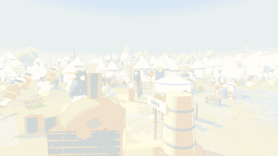
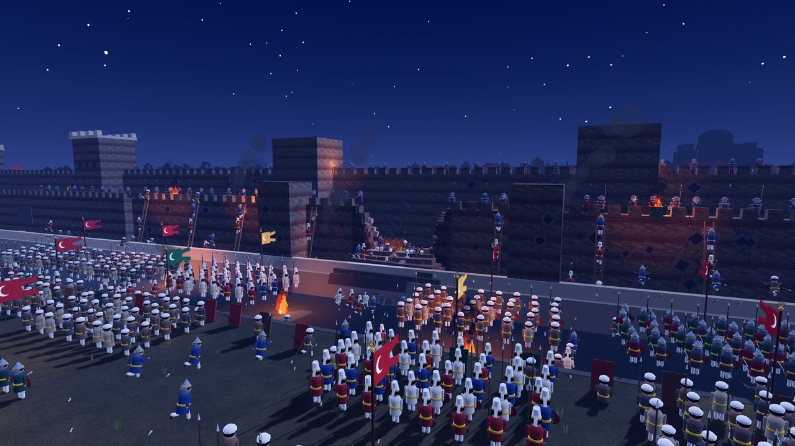
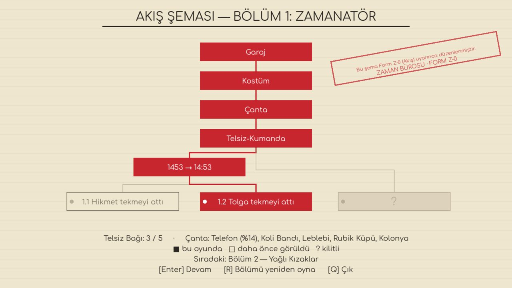

Tolga Fatih'e risk tablosu sunuyor, Urban'ın topunu yanlışlıkla havaya uçuruyor, Bizans'ta yedi nüsha form dolduruyor ve pazartesi 09:00 toplantısına yetişmeye çalışıyor. Sonra Zaman Bürosu onu kuşatmaya tanık olarak geri yolluyor.
Tolga pitches a risk matrix to Sultan Mehmed, accidentally blows up Urban's giant cannon, fills out forms in seven copies in Byzantium, and still tries to make his Monday 9 a.m. meeting. Then the Time Bureau sends him back to the siege as an official witness.
farklı final
different endings
Her seçim tarihi değiştirir. Aynı İstanbul'u iki kez fethedemezsin.
Every choice bends history. You'll never conquer the same Constantinople twice.
bölüm
chapters
Garajdan otağa, Zaman Bürosu'nun koridorlarından kuşatmanın iki tarafına. Hiçbir oynanış hepsini görmez.
From a garage workshop to the Sultan's tent, the Time Bureau's corridors and both sides of the siege. No single playthrough sees them all.
tamamen seslendirilmiş
fully voiced
Her replik Türkçe ve İngilizce seslendirildi. Hikmet Amca'nın telsizi dahil.
Every line is voiced in both English and Turkish. Uncle Hikmet's crackly walkie-talkie included.
tarihi doğruluk
historical accuracy
Ayasofya, Galata, surlar ve kızak yolu gerçeğine sadık. Tavuklar değil.
Hagia Sophia, Galata, the land walls and the famous overland ship slipway are faithful. The chickens are not.
FragmanTrailer

Urban'ın topu. Biraz fazla barut.Urban's cannon. Slightly too much powder.
Fatih:Mehmed: …Urban.
Urban: (Gülle yığınının içinden) Efendim.(From inside the pile of cannonballs) My Sultan.
Fatih:Mehmed: Sigorta… Urban'ın topunu sigortalamış mıydın?Insurance… Had you insured Urban's cannon?
Tolga: Hayır.No.
Fatih:Mehmed: Yazık.A pity.
Sultan kıpırdamadı bile. Yüzünde tek bir is lekesi.The Sultan didn't even flinch. One soot mark on his face.

Ağustos 1452 – 1 Haziran 1453. İki taraftan.August 1452 – 1 June 1453. From both sides.
Zaman Bürosu, Tolga'yı kuşatmanın geçici tanığı yapar: Bizans tarafında 13, Osmanlı tarafında 22 sayfa, her olayın bir fotoğrafı. Bizans surlarında mı durursun, Osmanlı ordugâhında mı? Tarafını sen seçersin.
The Time Bureau makes Tolga a temporary witness to the siege: 13 pages on the Byzantine side, 22 on the Ottoman side, one photograph of every event. Do you stand on the Byzantine walls or in the Ottoman camp? You pick the side.
Haliç'te kundak gemileriyle kürek çek, gedikte kovayla su taşı, Urban'ın topuna gülle sür, lağımda karşı lağım kaz, son hücumda merdiven daya. Galata'da ahitnamenin okunuşunu izle.
Row with the fire ships on the Golden Horn, haul water buckets to the breach, load Urban's great gun, dig counter-mines under the walls and plant ladders in the final assault. Then watch the charter of Galata being read out.
Tolga: Kuşatmada iş kazası kapsamda mı? Top güllesi mesela?Is a workplace accident covered during a siege? A cannonball, say?
Nihat: Büro personeli ölmez, Tolga Bey. Sadece geç kalır. Madde 9.Bureau staff don't die, Mr Tolga. They're just late. Article 9.
Kılıç, barut ve çatılarSwords, gunpowder and rooftopsKuşatma artık izlenmiyor, oynanıyor. Ölüm yok, ama her yenilginin tarihte bir bedeli var.You don't just watch the siege any more, you fight it. Nobody dies, but every defeat costs history something.
Kılıç düellosu
Sword duels
Vuruşun yönünü sen seçersin. Kalkanı son anda kaldırırsan darbeyi karşılarsın, zaman bir an donar. Kalkanlıya tekme, sendeleyene bitirici darbe. Gedikte dalga dalga gelen azaplar ve yeniçeriler.
Pick the direction of every swing. Raise the shield at the last moment to parry and time freezes for a beat. Kick shield-bearers, finish off the staggered. Wave after wave at the breach.
Fitilli tüfek
Matchlock handgun
Barut, gülle, harbiyle sıkıştır. Nişan al, fitil cızırdasın, patlasın. Koşan hedefe önden nişan almak gerek. Kaçırdığın her atış, sonraki dövüşe bir düşman daha demek.
Powder, ball, ram it home. Aim, hear the match hiss, fire. Lead your running targets. Every miss means one more enemy in the next fight.
Düşman tüfekçileri
Enemy gunners
"TÜFEKÇİ!" Fitil parlayınca yer değiştir ya da bir mantletin arkasına geç. Kıpırdamayan, kurşunu yer.
"GUNNER!" When the match glows, move or get behind a mantlet. Stand still and you'll take the shot.
Çatılarda serbest tırmanma
Free climbing on the rooftops
Konstantinopolis'te her duvara tutun, çatılarda yürü. Üç seyir noktası, çatılara saklanmış tarih sayfaları. Nihat telsizden tapuyu soruyor.
Grab any wall in Constantinople and run the rooftops. Three viewpoints and history pages hidden on the roofs. Nihat asks over the radio whether you hold the deed.
Sonsuz Kuşatma
Endless Siege
Gediği iki taraftan da tut: dalgalar, top ve tüfek dalgaları, Şahi topu, yorgunluk. En iyi beş koşun rekor tablosunda kalır.
Hold the breach from either side: waves, cannon and handgun rounds, the great Şahi gun, fatigue. Your five best runs stay on the record board.
Savaş karnesi ve zorluk
Battle report and difficulty
Her savaş bölümünün sonunda S, A, B ya da C. Kolay, Normal ve Zor ayarları; 15 yeni başarım.
An S, A, B or C after every battle chapter. Easy, Normal and Hard settings, and 15 new achievements.
Surun öbür yüzüThe other side of the wallBüro'da tarafı seçersin. Osmanlı tarafında Tolga ordunun kâtibi: hendeğe toprak taşır, lağım kazar, kuleye çıkar, gediğe koşar.You pick a side at the Bureau. On the Ottoman side Tolga is the army's clerk: he hauls earth into the ditch, digs mines, climbs the siege tower and charges the breach.
Gemiden tüfek
Firing from the galley
Zincire kaçan brigantinin tayfasına kadırganın başından ateş. Her isabet gemiyi yavaşlatır.
Fire from the galley's bow at the crew of the brigantine racing for the chain. Every hit slows her down.
Kuşatma kulesi
The siege tower
Bir gecede kurulan kule. Tepesinden surun yürüyüş yoluna bakılır: susturamadıkların gece çıkışa katılır.
The tower built in a single night. From the top you look down on the wall-walk: whoever you fail to silence joins the sortie that night.
Lağımda karşılaşma
Clash in the mine
Kazarken duvar delinir: karşı lağımcılarla dar tünelde kılıç. Kaybedersen tünel çöker.
The wall gives way as you dig: swords with the countermine crew in a narrow tunnel. Lose and the tunnel caves in.
Gediğe hücum
Storming the breach
Önce mazgaldakilere tüfek, sonra azaplarla molozun üstüne. Cenevizliler, savunucular, surda bir tüfekçi.
First the handgun at the battlements, then up the rubble with the azaps. Genoese, defenders and a gunner on the wall.
Oyundan karelerScreenshots
Görüntüler Türkçe arayüzle alındı; oyunun tamamı İngilizce de oynanabilir.Screenshots show the Turkish interface; the whole game is also fully playable in English.
BölümlerChaptersBazı bölümler yalnızca belli seçimlerden sonra açılır.Some chapters only open up after certain choices.
← kaydır →← scroll →
Her bölümün sonunda bir akış şemasıA flowchart after every chapter
Neyi seçtin, neyi kaçırdın, hangi yollar hâlâ kilitli: hepsi Zaman Bürosu'nun resmî şemasında. Bölümü baştan oynayıp başka bir kapıyı açabilirsin.
What you chose, what you missed, which paths are still locked: it's all on the Time Bureau's official chart, stamped in triplicate. Replay any chapter and open another door.
Tolga'nın çantasındaki beş eşya (leblebi, koli bandı, telefon…) her sahnede başka bir işe yarar. Ya da yaramaz.
The five items in Tolga's bag (roasted chickpeas, duct tape, a phone…) do something different in every scene. Or absolutely nothing.

KurulumInstallingİmzasız bağımsız oyun olduğu için sistem bir kez uyarabilir. Normaldir.It's an unsigned indie game, so your system may warn you once. That's normal.
🪟 Windows
Setup dosyasını indir ve çalıştır. Yönetici izni gerekmez. “Bilgisayarınızı korudu” çıkarsa: Ek bilgi → Yine de çalıştır.
Download and run the Setup file. No admin rights needed. If you see “Windows protected your PC”: More info → Run anyway.
🍎 macOS
Zip'i aç, uygulamaya sağ tıkla → Aç. Intel ve Apple Silicon'da çalışır.
Unzip, then right-click the app → Open. Runs on Intel and Apple Silicon.
🐧 Linux / Steam Deck
Zip'i aç ve GercekTarihBuDegil dosyasını çalıştır. Steam Deck'te “Steam dışı oyun ekle” ile kütüphaneye ekleyebilirsin.
Unzip and run GercekTarihBuDegil. On Steam Deck, use “Add a Non-Steam Game” to put it in your library.
Dil ve seslendirme oyun içinden, Ayarlar menüsünden değiştirilir.Switch language and voice-over any time from the in-game Settings menu.
📺 Yayıncılar ve içerik üreticileriStreamers & creators
Oyunu yayında ve videolarında dilediğin gibi kullanabilir, gelir elde edebilirsin. İzin almana gerek yok. 27 finalin hepsini bulan var mı, merak ediyoruz.
Stream it, make videos, monetize them: no permission needed. We're curious whether anyone finds all 27 endings.
Pazartesi 09:00 toplantısı bekliyor.The Monday 9 a.m. meeting is waiting.
Ücretsiz İndirDownload Free